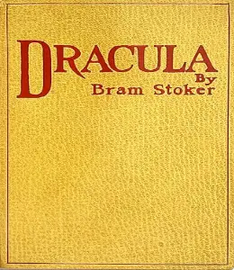

Scroll to read more
“Despair has its own calms”
“Oh, the terrible struggle that I have had against sleep so often of late; the pain of the sleeplessness, or the pain of the fear of sleep, and with such unknown horror as it has for me! How blessed are some people, whose lives have no fears, no dreads; to whom sleep is a blessing that comes nightly, and brings nothing but sweet dreams.” - Bram Stoker.
Early Career
Dublin Castle
After graduating he entered the Irish Civil Service at Dublin Castle, The Duties of Clerks of the Petty Sessions of Ireland which was based on his experience as a civil servant, was his first book. In 1876 Stoker met the actor Henry Irving and by 1878 had moved to London where he was acting manager at the famous Lyceum Theatre.

Sir Henry Irving

The Snake's Pass (1890)
Stoker published his stories since 1872, including the "Crystal Cup" (1872), his first horror tale "The Chain of Destiny" (1875), a collection of children's stories Under the Sunset (1881), and his first novel The Snake's Pass (1890), but he did not realize fame until the overwhelming success of Dracula (1897). The reasons for Dracula's success are many, and it has become a major focus for stage, musical and cinematic adaptations and, more recently, has become a major focus of academic criticism.
Dracula First Edition (1897)
Stoker was a regular visitor to Cruden Bay in Scotland between 1893 and 1910. His month-long holidays to the Aberdeenshire coastal village provided a large portion of available time for writing his books. Two novels were set in Cruden Bay: The Watter's Mou' (1895) and The Mystery of the Sea (1902). He started writing Dracula there in 1895 while in residence at the Kilmarnock Arms Hotel. The guest book with his signatures from 1894 and 1895 still survives. The nearby Slains Castle (also known as New Slains Castle) is linked with Bram Stoker and plausibly provided the visual palette for the descriptions of Castle Dracula during the writing phase. A distinctive room in Slains Castle, the octagonal hall, matches the description of the octagonal room in Castle Dracula.

Slains Castle
Dracula or The Un-Dead
Harker wanders Dracula's Castle
Jonathan Harker, a newly qualified English solicitor, visits Count Dracula at his castle in the Carpathian Mountains to help the Count purchase a house near London. Ignoring the Count's warning, Harker wanders the castle and encounters three vampire women and is seduced by the three female vampires, from whom he barely escapes after Dracula drives them away.
Harker gets attacked by Dracula's brides
Click here to read more...